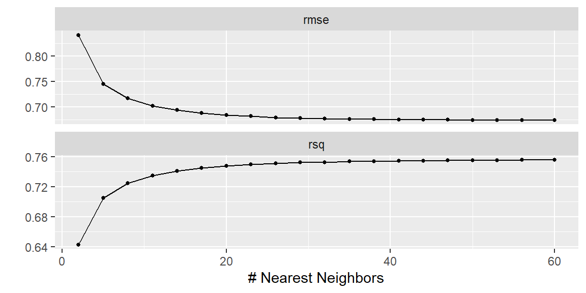

12 K-Nearest Neighbors
“It’s amazing that more people have climbed Mount Everest than have broken the 4-minute mile.” - Roger Bannister
The k-Nearest Neighbors (k-NN) algorithm is one of the simplest supervised learning techniques used for both classification and regression tasks. Unlike many other algorithms, k-NN is considered a non-parametric method, meaning it does not assume a specific functional form for the data. Instead, k-NN classifies or predicts the outcome of a new observation based on the majority class (classification) or the average value (regression) of its nearest neighbors. Thus, it is instance-based learning.
To determine these neighbors, the algorithm typically calculates a distance metric, most commonly Euclidean distance, between the new observation and existing data points. The user chooses a hyperparameter (k), the number of neighbors to consider, which heavily influences the model’s performance.
In sports analytics, k-NN is useful for numerous applications such as predicting game outcomes, classifying player positions based on physical measurements and performance metrics, or estimating player value based on comparable athletes.
12.1 Soccer Player Value
We will examine value of soccer players in in the video game FIFA 2021. We want to model the value of the player based on some descriptive variables (age, height, weight) and game ratings.
There are a number of variables that have a value of 0. We will exclude them. In addition, we will exclude goal keepers.
We will start by just focusing on the club AC Monza.
dat2 = dat |> filter(club_name=="AC Monza") 12.2 Predictions Based on Neighbors
Let’ look at the two variables defending and shooting only. Below are these rating plotted with the value in euros displayed with a continuous color gradient.
dat2 |> ggplot(aes(x = shooting, y = defending, col = value_eur))+
geom_point(size = 3)+
scale_color_gradient(low="blue", high="red")Suppose we have a new player who had a shooting rating of 60 and a defending rating of 30. This new player is shown in the plot below as a black point.
What would be the best prediction of this new point? Instead of using a model and a probability distribution to determine this prediction, we can look at the neighboring points.
In the plot below, the three closest points are connected to the new point with black lines.
We could then average the value for these three nearest neighbors and use that as the prediction of the new point. This would lead to a prediction of \[ \frac{625000+900000+750000}{3}=758333.3 \]
What if we choose to pick the five closest neighbors and average those for the prediction?
This would lead to a prediction of \[ \frac{625000+900000+750000+500000+2400000}{5}=1035000 \]
We see that changing how many neighbors we use for the average plays a role in what the prediction will be.
12.3 K-Nearest Neighbors in Tidymodels
Instead of looking at just one club, let’s look at all of them. Below is a scatterplot for all players. Due to the skewness of the value_eur variable, we took the log first.
dat |> ggplot(aes(x = shooting, y = defending, col = log(value_eur)))+
geom_point(size = 3)+
scale_color_gradient(low="blue", high="red")12.3.1 Train-Test split
As we have done in the past, we split the data into testing and training sets.
set.seed(1004)
dat_split = initial_split(dat)
train = training(dat_split)
test = testing(dat_split)Next, we create a pre-processing recipe. In k-NN, it is vital to standardize numeric features, as the algorithm is distance-based, and scales of features can significantly influence results. For example, if we had age as a feature along with height, the units of measurement for height may have a larger influence on which points are the closest neighbors than with age.
If we have any categorical features, we would need to convert them into dummy variables.
soc_rec = recipe(data = train,
value_eur ~ shooting + defending) |>
step_log(value_eur) |>
step_normalize(all_predictors()) |>
prep()
train_dat = soc_rec |> bake(new_data = NULL)
test_dat = soc_rec |> bake(test)12.3.2 Tuning the number of neighbors
Selecting an optimal (k) is essential, as it strongly influences model performance. Tidymodels supports tuning via cross-validation as we have done in previous methods.
model = nearest_neighbor(neighbors = tune()) |>
set_engine("kknn") |>
set_mode("regression")The range for neighbors can be tricky. Best to start low and then increase the max value if needed. Below, we will go to a max of 60 neighbors.
tune_grid = grid_regular(
neighbors(range=c(2, 60)),
levels = 20
)
dat_folds = vfold_cv(train_dat, v = 5)Tuning the model over the grid may take some time. In this scenario, it should take just a few seconds.
tune_results = tune_grid(
model,
value_eur ~ shooting + defending,
resamples = dat_folds,
grid = tune_grid
)Let’s plot the RMSE and \(R^2\) values for the different value of neighbors.
tune_results |> autoplot()
Sometimes, there will not be a minimum RMSE value or a maximum \(R^2\). In the plot above, both metrics continue to improve as the number of neighbors increases. We could go back and increase the max in the range for neighbors in the grid, or we could examine these plots and notice that the metrics are continuing to improve but by a small amount. In other words, they are leveling out.
Let’s first make sure the best metric is at the max.
best_param = tune_results |> select_best(metric = "rsq")
best_param# A tibble: 1 × 2
neighbors .config
<int> <chr>
1 60 Preprocessor1_Model20We see the max value of neighbors is the best by rsq. If you changed to metric to rmse it would also give the max.
Examining the plot above, it appears at 30 neighbors, both metrics have for the most part leveled off. Let’s use 30 for the number of neighbors.
model = nearest_neighbor(neighbors = 30) |>
set_engine("kknn") |>
set_mode("regression")
fit = model |> fit(value_eur ~ shooting + defending, data=train_dat)With the training data, let’s examine the \(R^2\) value of the fit.
preds = fit |> predict(new_data = train_dat) |>
cbind(train_dat)
rsq(data = preds,
truth = value_eur,
estimate=.pred)# A tibble: 1 × 3
.metric .estimator .estimate
<chr> <chr> <dbl>
1 rsq standard 0.781To see how well this fit will predict new data, let’s see the \(R^2\) value for the test data.
preds = fit |> predict(new_data = test_dat) |>
cbind(test_dat)
rsq(data = preds,
truth = value_eur,
estimate=.pred)# A tibble: 1 × 3
.metric .estimator .estimate
<chr> <chr> <dbl>
1 rsq standard 0.748We see the value fo \(R^2\) is about 0.034 lower for the test than for the train. Thus, we have slight overfitting but it is not severe.
12.3.3 Using all the Features
Let’s now fit a k-NN model with all the features available.
soc_rec = recipe(data = train,
value_eur ~ .) |>
step_rm(short_name, club_name) |>
step_log(value_eur) |>
step_dummy(all_nominal_predictors()) |>
step_normalize(all_predictors()) |>
prep()
train_dat = soc_rec |> bake(new_data = NULL)
test_dat = soc_rec |> bake(test)
model = nearest_neighbor(neighbors = tune()) |>
set_engine("kknn") |>
set_mode("regression")
tune_grid = grid_regular(
neighbors(range=c(2, 60)),
levels = 20
)
dat_folds = vfold_cv(train_dat, v = 5)
tune_results = tune_grid(
model,
value_eur ~ .,
resamples = dat_folds,
grid = tune_grid
)
tune_results |> autoplot()
best_param = tune_results |> select_best(metric = "rsq")
best_param# A tibble: 1 × 2
neighbors .config
<int> <chr>
1 17 Preprocessor1_Model06model = nearest_neighbor(neighbors = best_param$neighbors) |>
set_engine("kknn") |>
set_mode("regression")
fit = model |> fit(value_eur ~ ., data=train_dat)
preds = fit |> predict(new_data = train_dat) |>
cbind(train_dat)
rsq(data = preds,
truth = value_eur,
estimate=.pred)# A tibble: 1 × 3
.metric .estimator .estimate
<chr> <chr> <dbl>
1 rsq standard 0.914preds = fit |> predict(new_data = test_dat) |>
cbind(test_dat)
rsq(data = preds,
truth = value_eur,
estimate=.pred)# A tibble: 1 × 3
.metric .estimator .estimate
<chr> <chr> <dbl>
1 rsq standard 0.859